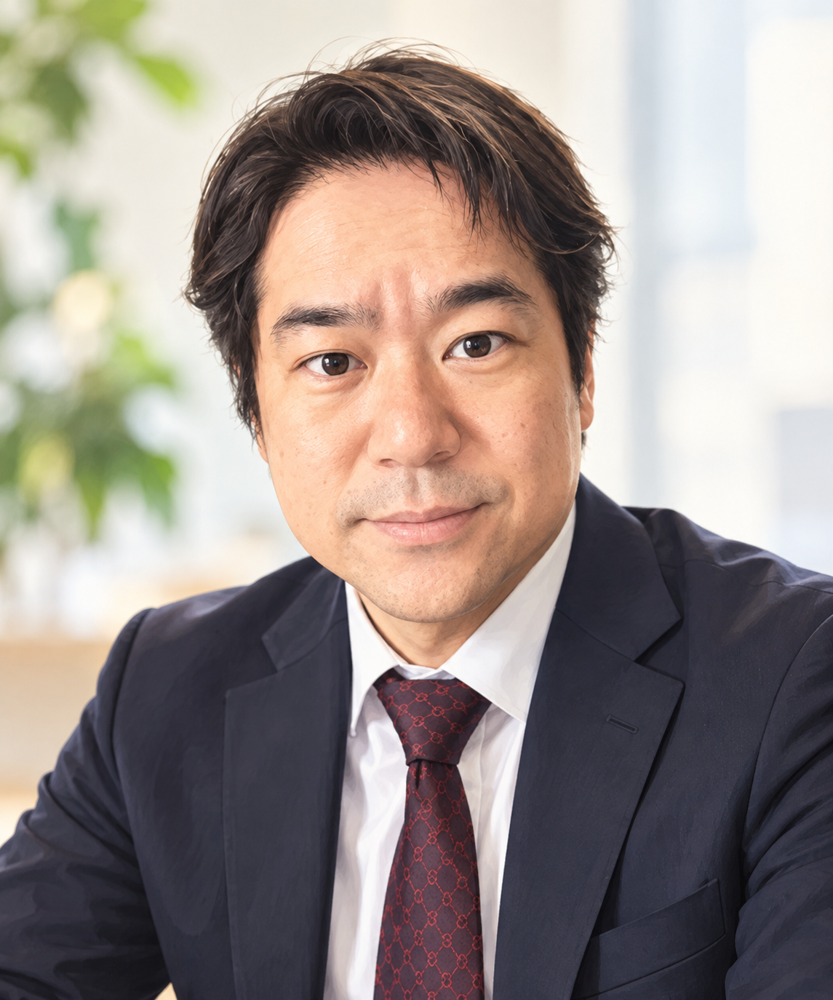

自動車学校
自動車学校指導員として、人に伝えること・相手に合わせてコミュニケーションを取ることの基礎を培いました。
FOUNDER / PROFILE
Hosokawa Sales Partners / HSP
細川 裕太
営業は、商品を売るだけの仕事ではありません。人と出会い、関係をつくり、企業の可能性を広げる仕事だと考えています。

CAREER
自動車学校指導員として、人に伝えること・相手に合わせてコミュニケーションを取ることの基礎を培いました。
ロードサービスや盗難保険などの分野で約10年間、新規営業開拓・取引先開拓に従事しました。
携帯電話基地局設置に関する折衝を経験。多くの関係者との調整や交渉に携わりました。
新規開拓やアライアンス構築、提携先との関係づくりなど、法人営業の現場で経験を重ねています。
OUR VISION
CONTACT
「新規開拓を始めたい」「提携先を増やしたい」「営業人材を採用する前に試したい」など、まだ具体化していない段階からご相談いただけます。
お問い合わせについて見る